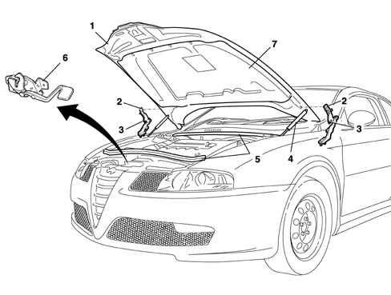
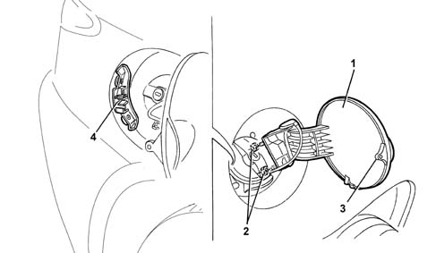

INTRODUCTION - COMPARTMENT LIDS
- Path
- Descriptions > 70 FITTINGS > 7025 COMPARTMENT LIDS > INTRODUCTION - COMPARTMENT LIDS
- Kind
- system description
- Applies to
- engines: 2.0 JTS, 3.2 V6, 1.9 JTD 16V; all production periods
- Interactive page
- https://sloeber94.github.io/elrnDB-aGt/en/#/125000430
Applies to: engines: 2.0 JTS, 3.2 V6, 1.9 JTD 16V; all production periods
SPECIFICATIONS
The car features two compartment lids, i.e. the bonnet lid and the fuel filler flap.
The bonnet lid consists of an exterior trim assembled on a support frame. Strips of sealant are applied between the trim and the frame. These limit vibrations while also increasing overall rigidity.
The fuel filler flap is made out of plastic in the same shade as the body and is moved by hand. A press-fastener is fitted to hold the flap in closed position.
BONNET LID
The bonnet lid, made through traditional pressing processes, is fitted with a frame with pre-established collapse lines. This safety feature, together with specific retaining hooks, prevent the bonnet going through the windscreen in the case of impact.
The bonnet is lined throughout with a preformed panel in sound-absorbent material. This reduces noise emissions to the outside of the car and also to the car interior to increase passenger comfort. To lower aerodynamic noise still further, the front and rear sides of the engine bay are fitted with two seals. Moulded foam blocks are also fitted behind the two hinges.
The panel is fastened to the frame by means of press-studs and is made out of compressed textile fibres coated with oil and water-repellent material that is preformed by hot-pressing. The pressing process includes the perimeter finish and holes for fastening.
The lid is supported by two hinges, each fitted with a fastening hook made out of the moving part of the hinge.
The lid is opened and closed by a single central catch that incorporates a safety hook.
The catch is opened by a Bowden cable operated by a lever located in the lower side area of the facia on the driver's side.
View of bonnet lid components

1 - Bonnet lid
2 - Lid hinge
3 - Retaining hook
4 - Telescopic struts
5 - Wind seals
6 - Bonnet catch
7 - Soundproofing trim
FUEL FILLER FLAP
View of fuel filler flap

1 - Fuel filler flap
2 - Retaining nuts
3 - Pin
4 - Flexible flap retaining seat
The fuel filler flap is made out of plastic in the same shade as the body and can be operated manually from outside.
The flap hinge mount is secured by two nuts accessible from inside the wheel arch. A pin on the inside of the flap fits into a flexible seat to hold the flap closed.